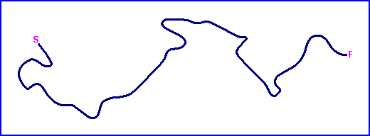

| Length | 2.332 Miles // 3.753 km |
| Direction | - Not Applicable - |
Contact Information |
|
| Address |
ACS Sektion Bern Theaterplatz 13 CH-3000 Bern 7 |
| Telephone | +41 (0)31 311 3828 |
| Website | http://www.gurnigelrennen.ch |
Gurnigel
Hillclimb

| Length | 2.332 Miles // 3.753 km |
| Direction | - Not Applicable - |
Contact Information |
|
| Address |
ACS Sektion Bern Theaterplatz 13 CH-3000 Bern 7 |
| Telephone | +41 (0)31 311 3828 |
| Website | http://www.gurnigelrennen.ch |
Lasted Updated: 07 March 2004 23:06:03 GMT Standard Time